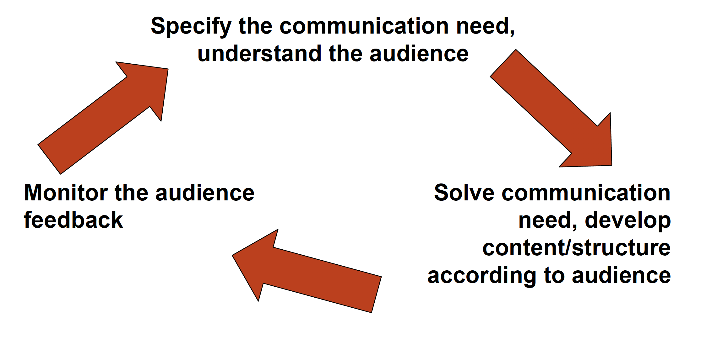

Lecture: Communication
Actuarial Data Science - Open Learning Resource
Recommended Reading
- The Art of Data Science, Chapter 10.
- R for Data Science, Chapters 11, 28, 29
- Other resources, such as videos in LinkedIn Learning related to business communication via UNSW Library (see the library tutorial)
Learning Objectives
Effective communication turns a technically correct analysis into a recommendation that decision-makers can understand and act on. In this lecture, we examine what different audiences care about, how to tailor your message, and how tools such as reproducible reports can make your work clearer and more trustworthy.
- Communicate modelling results to a range of business decision-making audiences, taking into account their needs and linking findings back to the original business objective(s).
- Explain the benefits of reproducible analysis, including good coding practices, version control, and data backup.
Communication Principles
Communication
- Effective communication is essential in data science and actuarial work
- Communication can be both formal and informal (routine)
- Common formats include:
- Written reports
- Oral presentations
- Emails and other professional correspondence
- Written reports
Perception of Actuaries as Communicators
Comments from the Market Opportunity Research Study (Society of Actuaries 2002):
“The challenge for the SOA and the actuarial profession is that employers, even traditional employers of actuaries, perceive that very few actuaries have both the quantitative skill and business savvy to analyze situations, and to create common sense strategic solutions that are easily communicated to all target audiences.”
John Trowbridge, Presidential Address (1998) (Trowbridge 1998):
“We are widely respected for our numeracy and intellectual capabilities, and also for our expertise in certain specialist areas. At the same time we are often regarded as academic and impractical, as obscure and indecisive. We can be seen as obsessed with detail without appreciating the ‘big picture’.”
Examples of Objectives
- To communicate results to decision-makers, who are primarily interested in conclusions rather than the underlying code.
- To prepare business reports for stakeholders.
- To collaborate with other data scientists (including your future self), who are interested in both the conclusions and how you reached them (i.e. the code).
- To answer focused questions, often technical in nature or aimed at gathering specific facts.
- etc.
Core Concepts
- Audience: Know your audience. When you have control over who the audience is, select the right audience for the type of feedback you are seeking.
- Content: Be focused and concise, while providing sufficient information for the audience to understand your message and the question(s) you are addressing.
- Style: Avoid jargon. Unless you are communicating a highly technical issue to a highly technical audience, use language, figures, and tables that can be understood by a general audience.
- Attitude: For informal communication, adopt an open and collaborative attitude. Be prepared to engage in dialogue, and make it clear that your goal is not to “defend” your work, but to seek input and improve it.
Communication Control Cycle

Specify the Communication Need
Tailor communication to the audience communication style
- Global vs specific
- Emotional vs logical
- Technical vs general
Understand the Audience
- Understand what the audience wants to take away.
- Communicate in the language and terminology the audience uses.
Develop the Content and Structure
- Match the message to the audience
- Be congruent – align content, voice, and body language
- Keep it short and simple (the “grandma test”)
- Use a clear and logical structure
- Respect your audience
- Make the message memorable
- Show clear connections in what you are communicating
Monitor Audience Feedback
- Communication is defined by the response it receives
- If it is not working, try a different approach
- Actively gather and respond to feedback
Communication in an Actuarial Context
“There are 3 stages in the education of a professional individual……the first is when the person is learning the meaning of the technical terms in order to be initiated into the mysteries of his profession. The second is when the person has learned to use these freely and can thus freely exchange ideas with professional colleagues. The third is when the person has learned not to use them and can thus communicate freely with the layman. Only at the third stage can the person claim to be a professional individual.”
— Jim Peglar, 1969 IAA President
Business Report Structure
- Title Page: Include a clear and informative title, your name, and the date.
- Executive Summary: Summarise the purpose of the report, the data and methods used, key findings, and main recommendations.
- Table of Contents: List the sections of the report.
- Introduction: Briefly outline the purpose and scope of the report.
- Methods and Findings: Describe the data, methodology, and key findings. Detailed coding and calculations should generally be excluded.
- Conclusions and Recommendations: Summarise the main conclusions and provide recommendations for action (if applicable).
- References: List all sources used in the report.
- Appendices: Include supporting materials (e.g. interview transcripts, raw data, detailed coding, and calculations) that is not essential to the main text.
Reproducible Analysis and Coding Practices
Reproducible Analysis
- Use tools such as R Markdown
- Set a seed before processes that involve randomness
- Ensure each step of the analysis is transparent and reproducible
Good Coding Practices and Version Control
- Write clear and meaningful comments
- Include details and reasoning behind key steps
- Use consistent and intuitive file names and project structures
- Use functions to avoid excessive repetition
- Maintain a separate file for (reusable) functions and a main script for analysis
- Version control
- Save stable versions of your work
- Use Git for version control
- etc.